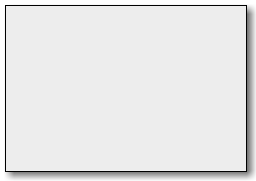

Gtk.Window
Example
| Subclasses: | Gtk.ApplicationWindow, Gtk.Assistant, Gtk.Dialog, Gtk.OffscreenWindow, Gtk.Plug |
|---|
Methods
| Inherited: | Gtk.Bin (1), Gtk.Container (27), Gtk.Widget (256), GObject.Object (33), Gtk.Buildable (10) |
|---|
Virtual Methods
| Inherited: | Gtk.Container (10), Gtk.Widget (82), GObject.Object (7), Gtk.Buildable (10) |
|---|
| do_activate_default() | |
| do_activate_focus() | |
| do_enable_debugging(toggle) | |
| do_keys_changed() | |
| do_set_focus(focus) |
Properties
| Inherited: | Gtk.Container (3), Gtk.Widget (38) |
|---|
| Name | Type | Flags | Short Description |
|---|---|---|---|
| accept-focus | bool | r/w | True if the window should receive the input focus. |
| application | Gtk.Application | r/w | The Gtk.Application for the window |
| attached-to | Gtk.Widget | r/w/c | The widget where the window is attached |
| decorated | bool | r/w | Whether the window should be decorated by the window manager |
| default-height | int | r/w | The default height of the window, used when initially showing the window |
| default-width | int | r/w | The default width of the window, used when initially showing the window |
| deletable | bool | r/w | Whether the window frame should have a close button |
| destroy-with-parent | bool | r/w | If this window should be destroyed when the parent is destroyed |
| focus-on-map | bool | r/w | True if the window should receive the input focus when mapped. |
| focus-visible | bool | r/w | Whether focus rectangles are currently visible in this window |
| gravity | Gdk.Gravity | r/w | The window gravity of the window |
| has-resize-grip | bool | r/w | Specifies whether the window should have a resize grip |
| has-toplevel-focus | bool | r | Whether the input focus is within this Gtk.Window |
| hide-titlebar-when-maximized | bool | r/w | If this window’s titlebar should be hidden when the window is maximized |
| icon | GdkPixbuf.Pixbuf | r/w | Icon for this window |
| icon-name | str | r/w | Name of the themed icon for this window |
| is-active | bool | r | Whether the toplevel is the current active window |
| is-maximized | bool | r | Whether the window is maximized |
| mnemonics-visible | bool | r/w | Whether mnemonics are currently visible in this window |
| modal | bool | r/w | If True, the window is modal (other windows are not usable while this one is up) |
| resizable | bool | r/w | If True, users can resize the window |
| resize-grip-visible | bool | r | Specifies whether the window’s resize grip is visible. |
| role | str | r/w | Unique identifier for the window to be used when restoring a session |
| screen | Gdk.Screen | r/w | The screen where this window will be displayed |
| skip-pager-hint | bool | r/w | True if the window should not be in the pager. |
| skip-taskbar-hint | bool | r/w | True if the window should not be in the task bar. |
| startup-id | str | w | Unique startup identifier for the window used by startup-notification |
| title | str | r/w | The title of the window |
| transient-for | Gtk.Window | r/w/c | The transient parent of the dialog |
| type | Gtk.WindowType | r/w | The type of the window |
| type-hint | Gdk.WindowTypeHint | r/w | Hint to help the desktop environment understand what kind of window this is and how to treat it. |
| urgency-hint | bool | r/w | True if the window should be brought to the user’s attention. |
| window-position | Gtk.WindowPosition | r/w | The initial position of the window |
Style Properties
| Inherited: | Gtk.Widget (17) |
|---|
| Name | Type | Default | Flags | Short Description |
|---|---|---|---|---|
| decoration-button-layout | str | 'menu:close' | r | Decorated button layout |
| decoration-resize-handle | int | 20 | r/w | Decoration resize handle size |
Signals
| Inherited: | Gtk.Container (4), Gtk.Widget (69), GObject.Object (1) |
|---|
| Name | Short Description |
|---|---|
| activate-default | The ::activate-default signal is a [keybinding signal][GtkBindingSignal] which gets emitted when the user activates the default widget of window. |
| activate-focus | The ::activate-focus signal is a [keybinding signal][GtkBindingSignal] which gets emitted when the user activates the currently focused widget of window. |
| enable-debugging | The ::enable-debugging signal is a [keybinding signal][GtkBindingSignal] which gets emitted when the user enables or disables interactive debugging. |
| keys-changed | The ::keys-changed signal gets emitted when the set of accelerators or mnemonics that are associated with window changes. |
| set-focus |
Fields
| Inherited: | Gtk.Bin (1), Gtk.Container (1), Gtk.Widget (1), GObject.InitiallyUnowned (3), GObject.Object (3) |
|---|
| Name | Type | Access | Description |
|---|---|---|---|
| bin | Gtk.Bin | r |
Class Details
- class Gtk.Window(type=<enum TOPLEVEL of type WindowType>, **kwds)
Bases: Gtk.Bin
A Gtk.Window is a toplevel window which can contain other widgets. Windows normally have decorations that are under the control of the windowing system and allow the user to manipulate the window (resize it, move it, close it,...).
# Gtk.Window as Gtk.Buildable
The Gtk.Window implementation of the Gtk.Buildable interface supports a custom element, which supports any number of elements representing the Gtk.AccelGroup objects you want to add to your window (synonymous with Gtk.Window.add_accel_group ().
It also supports the element, whose name property names the widget to receive the focus when the window is mapped.
An example of a UI definition fragment with accel groups:
<object class="GtkWindow"> <accel-groups> <group name="accelgroup1"/> </accel-groups> <initial-focus name="thunderclap"/> </object> ... <object class="GtkAccelGroup" id="accelgroup1"/>
The Gtk.Window implementation of the Gtk.Buildable interface supports setting a child as the titlebar by specifying “titlebar” as the “type” attribute of a element.
- static get_default_icon_list()
Returns: copy of default icon list Return type: [GdkPixbuf.Pixbuf] Gets the value set by Gtk.Window.set_default_icon_list (). The list is a copy and should be freed with GLib.List.free (), but the pixbufs in the list have not had their reference count incremented.
- static get_default_icon_name()
Returns: the fallback icon name for windows Return type: str Returns the fallback icon name for windows that has been set with Gtk.Window.set_default_icon_name (). The returned string is owned by GTK+ and should not be modified. It is only valid until the next call to Gtk.Window.set_default_icon_name ().
New in version 2.16.
- static list_toplevels()
Returns: list of toplevel widgets Return type: [Gtk.Widget] Returns a list of all existing toplevel windows. The widgets in the list are not individually referenced. If you want to iterate through the list and perform actions involving callbacks that might destroy the widgets, you must call `g_list_foreach (result, (GLib.Func ):py:obj:GObject.Object.ref, None )` first, and then unref all the widgets afterwards.
- static new(type)
Parameters: type (Gtk.WindowType) – type of window Returns: a new Gtk.Window. Return type: Gtk.Widget Creates a new Gtk.Window, which is a toplevel window that can contain other widgets. Nearly always, the type of the window should be Gtk.WindowType.TOPLEVEL. If you’re implementing something like a popup menu from scratch (which is a bad idea, just use Gtk.Menu ), you might use Gtk.WindowType.POPUP. Gtk.WindowType.POPUP is not for dialogs, though in some other toolkits dialogs are called “popups”. In GTK+, Gtk.WindowType.POPUP means a pop-up menu or pop-up tooltip. On X11, popup windows are not controlled by the [window manager][gtk-X11-arch].
If you simply want an undecorated window (no window borders), use Gtk.Window.set_decorated (), don’t use Gtk.WindowType.POPUP.
All top-level windows created by Gtk.Window.new () are stored in an internal top-level window list. This list can be obtained from Gtk.Window.list_toplevels (). Due to Gtk+ keeping a reference to the window internally, Gtk.Window.new () does not return a reference to the caller.
To delete a Gtk.Window, call Gtk.Widget.destroy ().
- static set_auto_startup_notification(setting)
Parameters: setting (bool) – True to automatically do startup notification By default, after showing the first Gtk.Window, GTK+ calls Gdk.notify_startup_complete (). Call this function to disable the automatic startup notification. You might do this if your first window is a splash screen, and you want to delay notification until after your real main window has been shown, for example.
In that example, you would disable startup notification temporarily, show your splash screen, then re-enable it so that showing the main window would automatically result in notification.
New in version 2.2.
- static set_default_icon(icon)
Parameters: icon (GdkPixbuf.Pixbuf) – the icon Sets an icon to be used as fallback for windows that haven’t had Gtk.Window.set_icon () called on them from a pixbuf.
New in version 2.4.
- static set_default_icon_from_file(filename)
Parameters: filename (str) – location of icon file Raises: GLib.GError Returns: True if setting the icon succeeded. Return type: bool Sets an icon to be used as fallback for windows that haven’t had Gtk.Window.set_icon_list () called on them from a file on disk. Warns on failure if err is None.
New in version 2.2.
- static set_default_icon_list(list)
Parameters: list ([GdkPixbuf.Pixbuf]) – a list of GdkPixbuf.Pixbuf Sets an icon list to be used as fallback for windows that haven’t had Gtk.Window.set_icon_list () called on them to set up a window-specific icon list. This function allows you to set up the icon for all windows in your app at once.
See Gtk.Window.set_icon_list () for more details.
- static set_default_icon_name(name)
Parameters: name (str) – the name of the themed icon Sets an icon to be used as fallback for windows that haven’t had Gtk.Window.set_icon_list () called on them from a named themed icon, see Gtk.Window.set_icon_name ().
New in version 2.6.
- static set_interactive_debugging(enable)
Parameters: enable (bool) – True to enable interactive debugging Opens or closes the [interactive debugger][interactive-debugging], which offers access to the widget hierarchy of the application and to useful debugging tools.
New in version 3.14.
- activate_default()
Returns: True if a widget got activated. Return type: bool Activates the default widget for the window, unless the current focused widget has been configured to receive the default action (see Gtk.Widget.set_receives_default ()), in which case the focused widget is activated.
- activate_focus()
Returns: True if a widget got activated. Return type: bool Activates the current focused widget within the window.
- activate_key(event)
Parameters: event (Gdk.EventKey) – a Gdk.EventKey Returns: True if a mnemonic or accelerator was found and activated. Return type: bool Activates mnemonics and accelerators for this Gtk.Window. This is normally called by the default ::key-press-event handler for toplevel windows, however in some cases it may be useful to call this directly when overriding the standard key handling for a toplevel window.
New in version 2.4.
- add_accel_group(accel_group)
Parameters: accel_group (Gtk.AccelGroup) – a Gtk.AccelGroup Associate accel_group with window, such that calling Gtk.accel_groups_activate () on window will activate accelerators in accel_group.
- add_mnemonic(keyval, target)
Parameters: - keyval (int) – the mnemonic
- target (Gtk.Widget) – the widget that gets activated by the mnemonic
Adds a mnemonic to this window.
- begin_move_drag(button, root_x, root_y, timestamp)
Parameters: Starts moving a window. This function is used if an application has window movement grips. When GDK can support it, the window movement will be done using the standard mechanism for the [window manager][gtk-X11-arch] or windowing system. Otherwise, GDK will try to emulate window movement, potentially not all that well, depending on the windowing system.
- begin_resize_drag(edge, button, root_x, root_y, timestamp)
Parameters: - edge (Gdk.WindowEdge) – position of the resize control
- button (int) – mouse button that initiated the drag
- root_x (int) – X position where the user clicked to initiate the drag, in root window coordinates
- root_y (int) – Y position where the user clicked to initiate the drag
- timestamp (int) – timestamp from the click event that initiated the drag
Starts resizing a window. This function is used if an application has window resizing controls. When GDK can support it, the resize will be done using the standard mechanism for the [window manager][gtk-X11-arch] or windowing system. Otherwise, GDK will try to emulate window resizing, potentially not all that well, depending on the windowing system.
- close()
Requests that the window is closed, similar to what happens when a window manager close button is clicked.
This function can be used with close buttons in custom titlebars.
New in version 3.10.
- deiconify()
Asks to deiconify (i.e. unminimize) the specified window. Note that you shouldn’t assume the window is definitely deiconified afterward, because other entities (e.g. the user or [window manager][gtk-X11-arch])) could iconify it again before your code which assumes deiconification gets to run.
You can track iconification via the “window-state-event” signal on Gtk.Widget.
- fullscreen()
Asks to place window in the fullscreen state. Note that you shouldn’t assume the window is definitely full screen afterward, because other entities (e.g. the user or [window manager][gtk-X11-arch]) could unfullscreen it again, and not all window managers honor requests to fullscreen windows. But normally the window will end up fullscreen. Just don’t write code that crashes if not.
You can track the fullscreen state via the “window-state-event” signal on Gtk.Widget.
New in version 2.2.
- get_accept_focus()
Returns: True if window should receive the input focus Return type: bool Gets the value set by Gtk.Window.set_accept_focus ().
New in version 2.4.
- get_application()
Returns: a Gtk.Application, or None Return type: Gtk.Application Gets the Gtk.Application associated with the window (if any).
New in version 3.0.
- get_attached_to()
Returns: the widget where the window is attached, or None if the window is not attached to any widget. Return type: Gtk.Widget Fetches the attach widget for this window. See Gtk.Window.set_attached_to ().
New in version 3.4.
- get_decorated()
Returns: True if the window has been set to have decorations Return type: bool Returns whether the window has been set to have decorations such as a title bar via Gtk.Window.set_decorated ().
- get_default_size()
Returns: width: location to store the default width, or None height: location to store the default height, or None Return type: (width: int, height: int) Gets the default size of the window. A value of -1 for the width or height indicates that a default size has not been explicitly set for that dimension, so the “natural” size of the window will be used.
- get_default_widget()
Returns: the default widget, or None if there is none. Return type: Gtk.Widget Returns the default widget for window. See Gtk.Window.set_default () for more details.
New in version 2.14.
- get_deletable()
Returns: True if the window has been set to have a close button Return type: bool Returns whether the window has been set to have a close button via Gtk.Window.set_deletable ().
New in version 2.10.
- get_destroy_with_parent()
Returns: True if the window will be destroyed with its transient parent. Return type: bool Returns whether the window will be destroyed with its transient parent. See Gtk.Window.set_destroy_with_parent ().
- get_focus()
Returns: the currently focused widget, or None if there is none. Return type: Gtk.Widget Retrieves the current focused widget within the window. Note that this is the widget that would have the focus if the toplevel window focused; if the toplevel window is not focused then `gtk_widget_has_focus (widget)` will not be True for the widget.
- get_focus_on_map()
Returns: True if window should receive the input focus when mapped. Return type: bool Gets the value set by Gtk.Window.set_focus_on_map ().
New in version 2.6.
- get_focus_visible()
Returns: True if “focus rectangles” are supposed to be visible in this window. Return type: bool Gets the value of the Gtk.Window :focus-visible property.
New in version 3.2.
- get_gravity()
Returns: window gravity Return type: Gdk.Gravity Gets the value set by Gtk.Window.set_gravity ().
- get_group()
Returns: the Gtk.WindowGroup for a window or the default group Return type: Gtk.WindowGroup Returns the group for window or the default group, if window is None or if window does not have an explicit window group.
New in version 2.10.
- get_has_resize_grip()
Returns: True if the window has a resize grip Return type: bool Determines whether the window may have a resize grip.
New in version 3.0.
Deprecated since version 3.14: Resize grips have been removed.
- get_hide_titlebar_when_maximized()
Returns: True if the window has requested to have its titlebar hidden when maximized Return type: bool Returns whether the window has requested to have its titlebar hidden when maximized. See Gtk.Window.set_hide_titlebar_when_maximized ().
New in version 3.4.
- get_icon()
Returns: icon for window Return type: GdkPixbuf.Pixbuf Gets the value set by Gtk.Window.set_icon () (or if you’ve called Gtk.Window.set_icon_list (), gets the first icon in the icon list).
- get_icon_list()
Returns: copy of window’s icon list Return type: [GdkPixbuf.Pixbuf] Retrieves the list of icons set by Gtk.Window.set_icon_list (). The list is copied, but the reference count on each member won’t be incremented.
- get_icon_name()
Returns: the icon name or None if the window has no themed icon Return type: str Returns the name of the themed icon for the window, see Gtk.Window.set_icon_name ().
New in version 2.6.
- get_mnemonic_modifier()
Returns: the modifier mask used to activate mnemonics on this window. Return type: Gdk.ModifierType Returns the mnemonic modifier for this window. See Gtk.Window.set_mnemonic_modifier ().
- get_mnemonics_visible()
Returns: True if mnemonics are supposed to be visible in this window. Return type: bool Gets the value of the Gtk.Window :mnemonics-visible property.
New in version 2.20.
- get_modal()
Returns: True if the window is set to be modal and establishes a grab when shown Return type: bool Returns whether the window is modal. See Gtk.Window.set_modal ().
- get_opacity()
Returns: the requested opacity for this window. Return type: float Fetches the requested opacity for this window. See Gtk.Window.set_opacity ().
New in version 2.12.
Deprecated since version 3.8: Use Gtk.Widget.get_opacity instead.
- get_position()
Returns: root_x: return location for X coordinate of gravity-determined reference point, or None root_y: return location for Y coordinate of gravity-determined reference point, or None Return type: (root_x: int, root_y: int) This function returns the position you need to pass to Gtk.Window.move () to keep window in its current position. This means that the meaning of the returned value varies with window gravity. See Gtk.Window.move () for more details.
If you haven’t changed the window gravity, its gravity will be Gdk.Gravity.NORTH_WEST. This means that Gtk.Window.get_position () gets the position of the top-left corner of the window manager frame for the window. Gtk.Window.move () sets the position of this same top-left corner.
Gtk.Window.get_position () is not 100% reliable because the X xlib.Window System does not specify a way to obtain the geometry of the decorations placed on a window by the window manager. Thus GTK+ is using a “best guess” that works with most window managers.
Moreover, nearly all window managers are historically broken with respect to their handling of window gravity. So moving a window to its current position as returned by Gtk.Window.get_position () tends to result in moving the window slightly. xlib.Window managers are slowly getting better over time.
If a window has gravity Gdk.Gravity.STATIC the window manager frame is not relevant, and thus Gtk.Window.get_position () will always produce accurate results. However you can’t use static gravity to do things like place a window in a corner of the screen, because static gravity ignores the window manager decorations.
If you are saving and restoring your application’s window positions, you should know that it’s impossible for applications to do this without getting it somewhat wrong because applications do not have sufficient knowledge of window manager state. The Correct Mechanism is to support the session management protocol (see the “GnomeClient” object in the GNOME libraries for example) and allow the window manager to save your window sizes and positions.
- get_resizable()
Returns: True if the user can resize the window Return type: bool Gets the value set by Gtk.Window.set_resizable ().
- get_resize_grip_area()
Returns: True if the resize grip’s area was retrieved rect: a pointer to a Gdk.Rectangle which we should store the resize grip area Return type: (bool, rect: cairo.RectangleInt) If a window has a resize grip, this will retrieve the grip position, width and height into the specified Gdk.Rectangle.
New in version 3.0.
Deprecated since version 3.14: Resize grips have been removed.
- get_role()
Returns: the role of the window if set, or None. The returned is owned by the widget and must not be modified or freed. Return type: str Returns the role of the window. See Gtk.Window.set_role () for further explanation.
- get_screen()
Returns: a Gdk.Screen. Return type: Gdk.Screen Returns the Gdk.Screen associated with window.
New in version 2.2.
- get_size()
Returns: width: return location for width, or None height: return location for height, or None Return type: (width: int, height: int) Obtains the current size of window. If window is not onscreen, it returns the size GTK+ will suggest to the [window manager][gtk-X11-arch] for the initial window size (but this is not reliably the same as the size the window manager will actually select). The size obtained by Gtk.Window.get_size () is the last size received in a Gdk.EventConfigure, that is, GTK+ uses its locally-stored size, rather than querying the X server for the size. As a result, if you call Gtk.Window.resize () then immediately call Gtk.Window.get_size (), the size won’t have taken effect yet. After the window manager processes the resize request, GTK+ receives notification that the size has changed via a configure event, and the size of the window gets updated.
Note 1: Nearly any use of this function creates a race condition, because the size of the window may change between the time that you get the size and the time that you perform some action assuming that size is the current size. To avoid race conditions, connect to “configure-event” on the window and adjust your size-dependent state to match the size delivered in the Gdk.EventConfigure.
Note 2: The returned size does not include the size of the window manager decorations (aka the window frame or border). Those are not drawn by GTK+ and GTK+ has no reliable method of determining their size.
Note 3: If you are getting a window size in order to position the window onscreen, there may be a better way. The preferred way is to simply set the window’s semantic type with Gtk.Window.set_type_hint (), which allows the window manager to e.g. center dialogs. Also, if you set the transient parent of dialogs with Gtk.Window.set_transient_for () window managers will often center the dialog over its parent window. It’s much preferred to let the window manager handle these things rather than doing it yourself, because all apps will behave consistently and according to user prefs if the window manager handles it. Also, the window manager can take the size of the window decorations/border into account, while your application cannot.
In any case, if you insist on application-specified window positioning, there’s still a better way than doing it yourself - Gtk.Window.set_position () will frequently handle the details for you.
- get_skip_pager_hint()
Returns: True if window shouldn’t be in pager Return type: bool Gets the value set by Gtk.Window.set_skip_pager_hint ().
New in version 2.2.
- get_skip_taskbar_hint()
Returns: True if window shouldn’t be in taskbar Return type: bool Gets the value set by Gtk.Window.set_skip_taskbar_hint ()
New in version 2.2.
- get_title()
Returns: the title of the window, or None if none has been set explicitly. The returned string is owned by the widget and must not be modified or freed. Return type: str Retrieves the title of the window. See Gtk.Window.set_title ().
- get_transient_for()
Returns: the transient parent for this window, or None if no transient parent has been set. Return type: Gtk.Window Fetches the transient parent for this window. See Gtk.Window.set_transient_for ().
- get_type_hint()
Returns: the type hint for window. Return type: Gdk.WindowTypeHint Gets the type hint for this window. See Gtk.Window.set_type_hint ().
- get_urgency_hint()
Returns: True if window is urgent Return type: bool Gets the value set by Gtk.Window.set_urgency_hint ()
New in version 2.8.
- get_window_type()
Returns: the type of the window Return type: Gtk.WindowType Gets the type of the window. See Gtk.WindowType.
New in version 2.20.
- has_group()
Returns: True if window has an explicit window group. New in version 2.22.
Return type: bool Returns whether window has an explicit window group.
- has_toplevel_focus()
Returns: True if the input focus is within this Gtk.Window Return type: bool Returns whether the input focus is within this Gtk.Window. For real toplevel windows, this is identical to Gtk.Window.is_active (), but for embedded windows, like Gtk.Plug, the results will differ.
New in version 2.4.
- iconify()
Asks to iconify (i.e. minimize) the specified window. Note that you shouldn’t assume the window is definitely iconified afterward, because other entities (e.g. the user or [window manager][gtk-X11-arch]) could deiconify it again, or there may not be a window manager in which case iconification isn’t possible, etc. But normally the window will end up iconified. Just don’t write code that crashes if not.
It’s permitted to call this function before showing a window, in which case the window will be iconified before it ever appears onscreen.
You can track iconification via the “window-state-event” signal on Gtk.Widget.
- is_active()
Returns: True if the window part of the current active window. Return type: bool Returns whether the window is part of the current active toplevel. (That is, the toplevel window receiving keystrokes.) The return value is True if the window is active toplevel itself, but also if it is, say, a Gtk.Plug embedded in the active toplevel. You might use this function if you wanted to draw a widget differently in an active window from a widget in an inactive window. See Gtk.Window.has_toplevel_focus ()
New in version 2.4.
- is_maximized()
Returns: whether the window has a maximized state. Return type: bool Retrieves the current maximized state of window.
Note that since maximization is ultimately handled by the window manager and happens asynchronously to an application request, you shouldn’t assume the return value of this function changing immediately (or at all), as an effect of calling Gtk.Window.maximize () or Gtk.Window.unmaximize ().
New in version 3.12.
- maximize()
Asks to maximize window, so that it becomes full-screen. Note that you shouldn’t assume the window is definitely maximized afterward, because other entities (e.g. the user or [window manager][gtk-X11-arch]) could unmaximize it again, and not all window managers support maximization. But normally the window will end up maximized. Just don’t write code that crashes if not.
It’s permitted to call this function before showing a window, in which case the window will be maximized when it appears onscreen initially.
You can track maximization via the “window-state-event” signal on Gtk.Widget, or by listening to notifications on the Gtk.Window :is-maximized property.
- mnemonic_activate(keyval, modifier)
Parameters: - keyval (int) – the mnemonic
- modifier (Gdk.ModifierType) – the modifiers
Returns: True if the activation is done.
Return type: Activates the targets associated with the mnemonic.
- move(x, y)
Parameters: Asks the [window manager][gtk-X11-arch] to move window to the given position. xlib.Window managers are free to ignore this; most window managers ignore requests for initial window positions (instead using a user-defined placement algorithm) and honor requests after the window has already been shown.
Note: the position is the position of the gravity-determined reference point for the window. The gravity determines two things: first, the location of the reference point in root window coordinates; and second, which point on the window is positioned at the reference point.
By default the gravity is Gdk.Gravity.NORTH_WEST, so the reference point is simply the x, y supplied to Gtk.Window.move (). The top-left corner of the window decorations (aka window frame or border) will be placed at x, y. Therefore, to position a window at the top left of the screen, you want to use the default gravity (which is Gdk.Gravity.NORTH_WEST ) and move the window to 0,0.
To position a window at the bottom right corner of the screen, you would set Gdk.Gravity.SOUTH_EAST, which means that the reference point is at x + the window width and y + the window height, and the bottom-right corner of the window border will be placed at that reference point. So, to place a window in the bottom right corner you would first set gravity to south east, then write: `gtk_window_move (window, Gdk.Screen.width () - window_width, Gdk.Screen.height () - window_height)` (note that this example does not take multi-head scenarios into account).
The [Extended xlib.Window Manager Hints Specification](http://www.freedesktop.org/Standards/wm-spec) has a nice table of gravities in the “implementation notes” section.
The Gtk.Window.get_position () documentation may also be relevant.
- parse_geometry(geometry)
Parameters: geometry (str) – geometry string Returns: True if string was parsed successfully Return type: bool Parses a standard X xlib.Window System geometry string - see the manual page for X (type “man X”) for details on this. Gtk.Window.parse_geometry () does work on all GTK+ ports including Win32 but is primarily intended for an X environment.
If either a size or a position can be extracted from the geometry string, Gtk.Window.parse_geometry () returns True and calls Gtk.Window.set_default_size () and/or Gtk.Window.move () to resize/move the window.
If Gtk.Window.parse_geometry () returns True, it will also set the Gdk.WindowHints.USER_POS and/or Gdk.WindowHints.USER_SIZE hints indicating to the window manager that the size/position of the window was user-specified. This causes most window managers to honor the geometry.
Note that for Gtk.Window.parse_geometry () to work as expected, it has to be called when the window has its “final” size, i.e. after calling Gtk.Widget.show_all () on the contents and Gtk.Window.set_geometry_hints () on the window.
<!-- language="C" --> #include <gtk/gtk.h> static void fill_with_content (GtkWidget *vbox) { // fill with content... } int main (int argc, char *argv[]) { GtkWidget *window, *vbox; GdkGeometry size_hints = { 100, 50, 0, 0, 100, 50, 10, 10, 0.0, 0.0, GDK_GRAVITY_NORTH_WEST }; gtk_init (&argc, &argv); window = gtk_window_new (GTK_WINDOW_TOPLEVEL); vbox = gtk_box_new (GTK_ORIENTATION_VERTICAL, 0); gtk_container_add (GTK_CONTAINER (window), vbox); fill_with_content (vbox); gtk_widget_show_all (vbox); gtk_window_set_geometry_hints (GTK_WINDOW (window), window, &size_hints, GDK_HINT_MIN_SIZE | GDK_HINT_BASE_SIZE | GDK_HINT_RESIZE_INC); if (argc > 1) { gboolean res; res = gtk_window_parse_geometry (GTK_WINDOW (window), argv[1]); if (! res) fprintf (stderr, "Failed to parse “%s”\n", argv[1]); } gtk_widget_show_all (window); gtk_main (); return 0; }
- present()
Presents a window to the user. This may mean raising the window in the stacking order, deiconifying it, moving it to the current desktop, and/or giving it the keyboard focus, possibly dependent on the user’s platform, window manager, and preferences.
If window is hidden, this function calls Gtk.Widget.show () as well.
This function should be used when the user tries to open a window that’s already open. Say for example the preferences dialog is currently open, and the user chooses Preferences from the menu a second time; use Gtk.Window.present () to move the already-open dialog where the user can see it.
If you are calling this function in response to a user interaction, it is preferable to use Gtk.Window.present_with_time ().
- present_with_time(timestamp)
Parameters: timestamp (int) – the timestamp of the user interaction (typically a button or key press event) which triggered this call Presents a window to the user in response to a user interaction. If you need to present a window without a timestamp, use Gtk.Window.present (). See Gtk.Window.present () for details.
New in version 2.8.
- propagate_key_event(event)
Parameters: event (Gdk.EventKey) – a Gdk.EventKey Returns: True if a widget in the focus chain handled the event. Return type: bool Propagate a key press or release event to the focus widget and up the focus container chain until a widget handles event. This is normally called by the default ::key-press-event and ::key-release-event handlers for toplevel windows, however in some cases it may be useful to call this directly when overriding the standard key handling for a toplevel window.
New in version 2.4.
- remove_accel_group(accel_group)
Parameters: accel_group (Gtk.AccelGroup) – a Gtk.AccelGroup Reverses the effects of Gtk.Window.add_accel_group ().
- remove_mnemonic(keyval, target)
Parameters: - keyval (int) – the mnemonic
- target (Gtk.Widget) – the widget that gets activated by the mnemonic
Removes a mnemonic from this window.
- reshow_with_initial_size()
Hides window, then reshows it, resetting the default size and position of the window. Used by GUI builders only.
Deprecated since version 3.10: GUI builders can call Gtk.Widget.hide (), Gtk.Widget.unrealize () and then Gtk.Widget.show () on window themselves, if they still need this functionality.
- resize(width, height)
Parameters: Resizes the window as if the user had done so, obeying geometry constraints. The default geometry constraint is that windows may not be smaller than their size request; to override this constraint, call Gtk.Widget.set_size_request () to set the window’s request to a smaller value.
If Gtk.Window.resize () is called before showing a window for the first time, it overrides any default size set with Gtk.Window.set_default_size ().
Windows may not be resized smaller than 1 by 1 pixels.
- resize_grip_is_visible()
Returns: True if a resize grip exists and is visible Return type: bool Determines whether a resize grip is visible for the specified window.
New in version 3.0.
Deprecated since version 3.14: Resize grips have been removed.
- resize_to_geometry(width, height)
Parameters: Like Gtk.Window.resize (), but width and height are interpreted in terms of the base size and increment set with Gtk.Window.set_geometry_hints.
New in version 3.0.
- set_accept_focus(setting)
Parameters: setting (bool) – True to let this window receive input focus Windows may set a hint asking the desktop environment not to receive the input focus. This function sets this hint.
New in version 2.4.
- set_application(application)
Parameters: application (Gtk.Application or None) – a Gtk.Application, or None Sets or unsets the Gtk.Application associated with the window.
The application will be kept alive for at least as long as the window is open.
New in version 3.0.
- set_attached_to(attach_widget)
Parameters: attach_widget (Gtk.Widget or None) – a Gtk.Widget, or None Marks window as attached to attach_widget. This creates a logical binding between the window and the widget it belongs to, which is used by GTK+ to propagate information such as styling or accessibility to window as if it was a children of attach_widget.
Examples of places where specifying this relation is useful are for instance a Gtk.Menu created by a Gtk.ComboBox, a completion popup window created by Gtk.Entry or a typeahead search entry created by Gtk.TreeView.
Note that this function should not be confused with Gtk.Window.set_transient_for (), which specifies a window manager relation between two toplevels instead.
Passing None for attach_widget detaches the window.
New in version 3.4.
- set_decorated(setting)
Parameters: setting (bool) – True to decorate the window By default, windows are decorated with a title bar, resize controls, etc. Some [window managers][gtk-X11-arch] allow GTK+ to disable these decorations, creating a borderless window. If you set the decorated property to False using this function, GTK+ will do its best to convince the window manager not to decorate the window. Depending on the system, this function may not have any effect when called on a window that is already visible, so you should call it before calling Gtk.Widget.show ().
On Windows, this function always works, since there’s no window manager policy involved.
- set_default(default_widget)
Parameters: default_widget (Gtk.Widget or None) – widget to be the default, or None to unset the default widget for the toplevel The default widget is the widget that’s activated when the user presses Enter in a dialog (for example). This function sets or unsets the default widget for a Gtk.Window. When setting (rather than unsetting) the default widget it’s generally easier to call Gtk.Widget.grab_default () on the widget. Before making a widget the default widget, you must call Gtk.Widget.set_can_default () on the widget you’d like to make the default.
- set_default_geometry(width, height)
Parameters: Like Gtk.Window.set_default_size (), but width and height are interpreted in terms of the base size and increment set with Gtk.Window.set_geometry_hints.
New in version 3.0.
- set_default_size(width, height)
Parameters: Sets the default size of a window. If the window’s “natural” size (its size request) is larger than the default, the default will be ignored. More generally, if the default size does not obey the geometry hints for the window (Gtk.Window.set_geometry_hints () can be used to set these explicitly), the default size will be clamped to the nearest permitted size.
Unlike Gtk.Widget.set_size_request (), which sets a size request for a widget and thus would keep users from shrinking the window, this function only sets the initial size, just as if the user had resized the window themselves. Users can still shrink the window again as they normally would. Setting a default size of -1 means to use the “natural” default size (the size request of the window).
For more control over a window’s initial size and how resizing works, investigate Gtk.Window.set_geometry_hints ().
For some uses, Gtk.Window.resize () is a more appropriate function. Gtk.Window.resize () changes the current size of the window, rather than the size to be used on initial display. Gtk.Window.resize () always affects the window itself, not the geometry widget.
The default size of a window only affects the first time a window is shown; if a window is hidden and re-shown, it will remember the size it had prior to hiding, rather than using the default size.
Windows can’t actually be 0x0 in size, they must be at least 1x1, but passing 0 for width and height is OK, resulting in a 1x1 default size.
- set_deletable(setting)
Parameters: setting (bool) – True to decorate the window as deletable By default, windows have a close button in the window frame. Some [window managers][gtk-X11-arch] allow GTK+ to disable this button. If you set the deletable property to False using this function, GTK+ will do its best to convince the window manager not to show a close button. Depending on the system, this function may not have any effect when called on a window that is already visible, so you should call it before calling Gtk.Widget.show ().
On Windows, this function always works, since there’s no window manager policy involved.
New in version 2.10.
- set_destroy_with_parent(setting)
Parameters: setting (bool) – whether to destroy window with its transient parent If setting is True, then destroying the transient parent of window will also destroy window itself. This is useful for dialogs that shouldn’t persist beyond the lifetime of the main window they’re associated with, for example.
- set_focus(focus)
Parameters: focus (Gtk.Widget or None) – widget to be the new focus widget, or None to unset any focus widget for the toplevel window. If focus is not the current focus widget, and is focusable, sets it as the focus widget for the window. If focus is None, unsets the focus widget for this window. To set the focus to a particular widget in the toplevel, it is usually more convenient to use Gtk.Widget.grab_focus () instead of this function.
- set_focus_on_map(setting)
Parameters: setting (bool) – True to let this window receive input focus on map Windows may set a hint asking the desktop environment not to receive the input focus when the window is mapped. This function sets this hint.
New in version 2.6.
- set_focus_visible(setting)
Parameters: setting (bool) – the new value Sets the Gtk.Window :focus-visible property.
New in version 3.2.
- set_geometry_hints(geometry_widget, geometry, geom_mask)
Parameters: - geometry_widget (Gtk.Widget or None) – widget the geometry hints will be applied to or None
- geometry (Gdk.Geometry or None) – struct containing geometry information or None
- geom_mask (Gdk.WindowHints) – mask indicating which struct fields should be paid attention to
This function sets up hints about how a window can be resized by the user. You can set a minimum and maximum size; allowed resize increments (e.g. for xterm, you can only resize by the size of a character); aspect ratios; and more. See the Gdk.Geometry struct.
- set_gravity(gravity)
Parameters: gravity (Gdk.Gravity) – window gravity xlib.Window gravity defines the meaning of coordinates passed to Gtk.Window.move (). See Gtk.Window.move () and Gdk.Gravity for more details.
The default window gravity is Gdk.Gravity.NORTH_WEST which will typically “do what you mean.”
- set_has_resize_grip(value)
Parameters: value (bool) – True to allow a resize grip Sets whether window has a corner resize grip.
Note that the resize grip is only shown if the window is actually resizable and not maximized. Use Gtk.Window.resize_grip_is_visible () to find out if the resize grip is currently shown.
New in version 3.0.
Deprecated since version 3.14: Resize grips have been removed.
- set_has_user_ref_count(setting)
Parameters: setting (bool) – the new value Tells GTK+ whether to drop its extra reference to the window when Gtk.Widget.destroy () is called.
This function is only exported for the benefit of language bindings which may need to keep the window alive until their wrapper object is garbage collected. There is no justification for ever calling this function in an application.
New in version 3.0.
- set_hide_titlebar_when_maximized(setting)
Parameters: setting (bool) – whether to hide the titlebar when window is maximized If setting is True, then window will request that it’s titlebar should be hidden when maximized. This is useful for windows that don’t convey any information other than the application name in the titlebar, to put the available screen space to better use. If the underlying window system does not support the request, the setting will not have any effect.
Note that custom titlebars set with Gtk.Window.set_titlebar () are not affected by this. The application is in full control of their content and visibility anyway.
New in version 3.4.
- set_icon(icon)
Parameters: icon (GdkPixbuf.Pixbuf or None) – icon image, or None Sets up the icon representing a Gtk.Window. This icon is used when the window is minimized (also known as iconified). Some window managers or desktop environments may also place it in the window frame, or display it in other contexts.
The icon should be provided in whatever size it was naturally drawn; that is, don’t scale the image before passing it to GTK+. Scaling is postponed until the last minute, when the desired final size is known, to allow best quality.
If you have your icon hand-drawn in multiple sizes, use Gtk.Window.set_icon_list (). Then the best size will be used.
This function is equivalent to calling Gtk.Window.set_icon_list () with a 1-element list.
See also Gtk.Window.set_default_icon_list () to set the icon for all windows in your application in one go.
- set_icon_from_file(filename)
Parameters: filename (str) – location of icon file Raises: GLib.GError Returns: True if setting the icon succeeded. Return type: bool Sets the icon for window. Warns on failure if err is None.
This function is equivalent to calling Gtk.Window.set_icon () with a pixbuf created by loading the image from filename.
New in version 2.2.
- set_icon_list(list)
Parameters: list ([GdkPixbuf.Pixbuf]) – list of GdkPixbuf.Pixbuf Sets up the icon representing a Gtk.Window. The icon is used when the window is minimized (also known as iconified). Some window managers or desktop environments may also place it in the window frame, or display it in other contexts.
Gtk.Window.set_icon_list () allows you to pass in the same icon in several hand-drawn sizes. The list should contain the natural sizes your icon is available in; that is, don’t scale the image before passing it to GTK+. Scaling is postponed until the last minute, when the desired final size is known, to allow best quality.
By passing several sizes, you may improve the final image quality of the icon, by reducing or eliminating automatic image scaling.
Recommended sizes to provide: 16x16, 32x32, 48x48 at minimum, and larger images (64x64, 128x128) if you have them.
See also Gtk.Window.set_default_icon_list () to set the icon for all windows in your application in one go.
Note that transient windows (those who have been set transient for another window using Gtk.Window.set_transient_for ()) will inherit their icon from their transient parent. So there’s no need to explicitly set the icon on transient windows.
- set_icon_name(name)
Parameters: name (str or None) – the name of the themed icon Sets the icon for the window from a named themed icon. See the docs for Gtk.IconTheme for more details.
Note that this has nothing to do with the WM_ICON_NAME property which is mentioned in the ICCCM.
New in version 2.6.
- set_keep_above(setting)
Parameters: setting (bool) – whether to keep window above other windows Asks to keep window above, so that it stays on top. Note that you shouldn’t assume the window is definitely above afterward, because other entities (e.g. the user or [window manager][gtk-X11-arch]) could not keep it above, and not all window managers support keeping windows above. But normally the window will end kept above. Just don’t write code that crashes if not.
It’s permitted to call this function before showing a window, in which case the window will be kept above when it appears onscreen initially.
You can track the above state via the “window-state-event” signal on Gtk.Widget.
Note that, according to the [Extended xlib.Window Manager Hints Specification](http://www.freedesktop.org/Standards/wm-spec), the above state is mainly meant for user preferences and should not be used by applications e.g. for drawing attention to their dialogs.
New in version 2.4.
- set_keep_below(setting)
Parameters: setting (bool) – whether to keep window below other windows Asks to keep window below, so that it stays in bottom. Note that you shouldn’t assume the window is definitely below afterward, because other entities (e.g. the user or [window manager][gtk-X11-arch]) could not keep it below, and not all window managers support putting windows below. But normally the window will be kept below. Just don’t write code that crashes if not.
It’s permitted to call this function before showing a window, in which case the window will be kept below when it appears onscreen initially.
You can track the below state via the “window-state-event” signal on Gtk.Widget.
Note that, according to the [Extended xlib.Window Manager Hints Specification](http://www.freedesktop.org/Standards/wm-spec), the above state is mainly meant for user preferences and should not be used by applications e.g. for drawing attention to their dialogs.
New in version 2.4.
- set_mnemonic_modifier(modifier)
Parameters: modifier (Gdk.ModifierType) – the modifier mask used to activate mnemonics on this window. Sets the mnemonic modifier for this window.
- set_mnemonics_visible(setting)
Parameters: setting (bool) – the new value Sets the Gtk.Window :mnemonics-visible property.
New in version 2.20.
- set_modal(modal)
Parameters: modal (bool) – whether the window is modal Sets a window modal or non-modal. Modal windows prevent interaction with other windows in the same application. To keep modal dialogs on top of main application windows, use Gtk.Window.set_transient_for () to make the dialog transient for the parent; most [window managers][gtk-X11-arch] will then disallow lowering the dialog below the parent.
- set_opacity(opacity)
Parameters: opacity (float) – desired opacity, between 0 and 1 Request the windowing system to make window partially transparent, with opacity 0 being fully transparent and 1 fully opaque. (Values of the opacity parameter are clamped to the [0,1] range.) On X11 this has any effect only on X screens with a compositing manager running. See Gtk.Widget.is_composited (). On Windows it should work always.
Note that setting a window’s opacity after the window has been shown causes it to flicker once on Windows.
New in version 2.12.
Deprecated since version 3.8: Use Gtk.Widget.set_opacity instead.
- set_position(position)
Parameters: position (Gtk.WindowPosition) – a position constraint. Sets a position constraint for this window. If the old or new constraint is Gtk.WindowPosition.CENTER_ALWAYS, this will also cause the window to be repositioned to satisfy the new constraint.
- set_resizable(resizable)
Parameters: resizable (bool) – True if the user can resize this window Sets whether the user can resize a window. Windows are user resizable by default.
- set_role(role)
Parameters: role (str) – unique identifier for the window to be used when restoring a session This function is only useful on X11, not with other GTK+ targets.
In combination with the window title, the window role allows a [window manager][gtk-X11-arch] to identify “the same” window when an application is restarted. So for example you might set the “toolbox” role on your app’s toolbox window, so that when the user restarts their session, the window manager can put the toolbox back in the same place.
If a window already has a unique title, you don’t need to set the role, since the WM can use the title to identify the window when restoring the session.
- set_screen(screen)
Parameters: screen (Gdk.Screen) – a Gdk.Screen. Sets the Gdk.Screen where the window is displayed; if the window is already mapped, it will be unmapped, and then remapped on the new screen.
New in version 2.2.
- set_skip_pager_hint(setting)
Parameters: setting (bool) – True to keep this window from appearing in the pager Windows may set a hint asking the desktop environment not to display the window in the pager. This function sets this hint. (A “pager” is any desktop navigation tool such as a workspace switcher that displays a thumbnail representation of the windows on the screen.)
New in version 2.2.
- set_skip_taskbar_hint(setting)
Parameters: setting (bool) – True to keep this window from appearing in the task bar Windows may set a hint asking the desktop environment not to display the window in the task bar. This function sets this hint.
New in version 2.2.
- set_startup_id(startup_id)
Parameters: startup_id (str) – a string with startup-notification identifier Startup notification identifiers are used by desktop environment to track application startup, to provide user feedback and other features. This function changes the corresponding property on the underlying Gdk.Window. Normally, startup identifier is managed automatically and you should only use this function in special cases like transferring focus from other processes. You should use this function before calling Gtk.Window.present () or any equivalent function generating a window map event.
This function is only useful on X11, not with other GTK+ targets.
New in version 2.12.
- set_title(title)
Parameters: title (str) – title of the window Sets the title of the Gtk.Window. The title of a window will be displayed in its title bar; on the X xlib.Window System, the title bar is rendered by the [window manager][gtk-X11-arch], so exactly how the title appears to users may vary according to a user’s exact configuration. The title should help a user distinguish this window from other windows they may have open. A good title might include the application name and current document filename, for example.
- set_titlebar(titlebar)
Parameters: titlebar (Gtk.Widget or None) – the widget to use as titlebar Sets a custom titlebar for window.
If you set a custom titlebar, GTK+ will do its best to convince the window manager not to put its own titlebar on the window. Depending on the system, this function may not work for a window that is already visible, so you set the titlebar before calling Gtk.Widget.show ().
New in version 3.10.
- set_transient_for(parent)
Parameters: parent (Gtk.Window or None) – parent window, or None Dialog windows should be set transient for the main application window they were spawned from. This allows [window managers][gtk-X11-arch] to e.g. keep the dialog on top of the main window, or center the dialog over the main window. Gtk.Dialog.new_with_buttons () and other convenience functions in GTK+ will sometimes call Gtk.Window.set_transient_for () on your behalf.
Passing None for parent unsets the current transient window.
On Windows, this function puts the child window on top of the parent, much as the window manager would have done on X.
- set_type_hint(hint)
Parameters: hint (Gdk.WindowTypeHint) – the window type By setting the type hint for the window, you allow the window manager to decorate and handle the window in a way which is suitable to the function of the window in your application.
This function should be called before the window becomes visible.
Gtk.Dialog.new_with_buttons () and other convenience functions in GTK+ will sometimes call Gtk.Window.set_type_hint () on your behalf.
- set_urgency_hint(setting)
Parameters: setting (bool) – True to mark this window as urgent Windows may set a hint asking the desktop environment to draw the users attention to the window. This function sets this hint.
New in version 2.8.
- set_wmclass(wmclass_name, wmclass_class)
Parameters: Don’t use this function. It sets the X xlib.Window System “class” and “name” hints for a window. According to the ICCCM, you should always set these to the same value for all windows in an application, and GTK+ sets them to that value by default, so calling this function is sort of pointless. However, you may want to call Gtk.Window.set_role () on each window in your application, for the benefit of the session manager. Setting the role allows the window manager to restore window positions when loading a saved session.
- stick()
Asks to stick window, which means that it will appear on all user desktops. Note that you shouldn’t assume the window is definitely stuck afterward, because other entities (e.g. the user or [window manager][gtk-X11-arch] could unstick it again, and some window managers do not support sticking windows. But normally the window will end up stuck. Just don’t write code that crashes if not.
It’s permitted to call this function before showing a window.
You can track stickiness via the “window-state-event” signal on Gtk.Widget.
- unfullscreen()
Asks to toggle off the fullscreen state for window. Note that you shouldn’t assume the window is definitely not full screen afterward, because other entities (e.g. the user or [window manager][gtk-X11-arch]) could fullscreen it again, and not all window managers honor requests to unfullscreen windows. But normally the window will end up restored to its normal state. Just don’t write code that crashes if not.
You can track the fullscreen state via the “window-state-event” signal on Gtk.Widget.
New in version 2.2.
- unmaximize()
Asks to unmaximize window. Note that you shouldn’t assume the window is definitely unmaximized afterward, because other entities (e.g. the user or [window manager][gtk-X11-arch]) could maximize it again, and not all window managers honor requests to unmaximize. But normally the window will end up unmaximized. Just don’t write code that crashes if not.
You can track maximization via the “window-state-event” signal on Gtk.Widget.
- unstick()
Asks to unstick window, which means that it will appear on only one of the user’s desktops. Note that you shouldn’t assume the window is definitely unstuck afterward, because other entities (e.g. the user or [window manager][gtk-X11-arch]) could stick it again. But normally the window will end up stuck. Just don’t write code that crashes if not.
You can track stickiness via the “window-state-event” signal on Gtk.Widget.
- do_activate_default()
Type: virtual
- do_activate_focus()
Type: virtual
- do_keys_changed()
Type: virtual
- do_set_focus(focus)
Type: virtual Parameters: focus (Gtk.Widget or None) – widget to be the new focus widget, or None to unset any focus widget for the toplevel window. If focus is not the current focus widget, and is focusable, sets it as the focus widget for the window. If focus is None, unsets the focus widget for this window. To set the focus to a particular widget in the toplevel, it is usually more convenient to use Gtk.Widget.grab_focus () instead of this function.
Signal Details
- Gtk.Window.signals.activate_default(window)
Signal Name: activate-default Flags: ACTION, RUN_LAST Parameters: window (Gtk.Window) – The object which received the signal The ::activate-default signal is a [keybinding signal][GtkBindingSignal] which gets emitted when the user activates the default widget of window.
- Gtk.Window.signals.activate_focus(window)
Signal Name: activate-focus Flags: ACTION, RUN_LAST Parameters: window (Gtk.Window) – The object which received the signal The ::activate-focus signal is a [keybinding signal][GtkBindingSignal] which gets emitted when the user activates the currently focused widget of window.
- Gtk.Window.signals.enable_debugging(window, toggle)
Signal Name: enable-debugging
Flags: Parameters: - window (Gtk.Window) – The object which received the signal
- toggle (bool) – toggle the debugger
Returns: True if the key binding was handled
Return type: The ::enable-debugging signal is a [keybinding signal][GtkBindingSignal] which gets emitted when the user enables or disables interactive debugging. When toggle is True, interactive debugging is toggled on or off, when it is False, the debugger will be pointed at the widget under the pointer.
The default bindings for this signal are Ctrl-Shift-I and Ctrl-Shift-D.
- Gtk.Window.signals.keys_changed(window)
Signal Name: keys-changed Flags: RUN_FIRST Parameters: window (Gtk.Window) – The object which received the signal The ::keys-changed signal gets emitted when the set of accelerators or mnemonics that are associated with window changes.
- Gtk.Window.signals.set_focus(window, object)
Signal Name: set-focus
Flags: Parameters: - window (Gtk.Window) – The object which received the signal
- object (Gtk.Widget) –
Property Details
- Gtk.Window.props.accept_focus
Name: accept-focus Type: bool Default Value: True Flags: r/w Whether the window should receive the input focus.
New in version 2.4.
- Gtk.Window.props.application
Name: application Type: Gtk.Application Default Value: None Flags: r/w The Gtk.Application associated with the window.
The application will be kept alive for at least as long as it has any windows associated with it (see Gio.Application.hold () for a way to keep it alive without windows).
Normally, the connection between the application and the window will remain until the window is destroyed, but you can explicitly remove it by setting the ::application property to None.
New in version 3.0.
- Gtk.Window.props.attached_to
Name: attached-to Type: Gtk.Widget Default Value: None Flags: r/w/c The widget to which this window is attached. See Gtk.Window.set_attached_to ().
Examples of places where specifying this relation is useful are for instance a Gtk.Menu created by a Gtk.ComboBox, a completion popup window created by Gtk.Entry or a typeahead search entry created by Gtk.TreeView.
New in version 3.4.
- Gtk.Window.props.decorated
Name: decorated Type: bool Default Value: True Flags: r/w Whether the window should be decorated by the window manager.
New in version 2.4.
- Gtk.Window.props.default_height
Name: default-height Type: int Default Value: -1 Flags: r/w The default height of the window, used when initially showing the window
- Gtk.Window.props.default_width
Name: default-width Type: int Default Value: -1 Flags: r/w The default width of the window, used when initially showing the window
- Gtk.Window.props.deletable
Name: deletable Type: bool Default Value: True Flags: r/w Whether the window frame should have a close button.
New in version 2.10.
- Gtk.Window.props.destroy_with_parent
Name: destroy-with-parent Type: bool Default Value: False Flags: r/w If this window should be destroyed when the parent is destroyed
- Gtk.Window.props.focus_on_map
Name: focus-on-map Type: bool Default Value: True Flags: r/w Whether the window should receive the input focus when mapped.
New in version 2.6.
- Gtk.Window.props.focus_visible
Name: focus-visible Type: bool Default Value: True Flags: r/w Whether ‘focus rectangles’ are currently visible in this window.
This property is maintained by GTK+ based on user input and should not be set by applications.
New in version 2.20.
- Gtk.Window.props.gravity
Name: gravity Type: Gdk.Gravity Default Value: Gdk.Gravity.NORTH_WEST Flags: r/w The window gravity of the window. See Gtk.Window.move () and Gdk.Gravity for more details about window gravity.
New in version 2.4.
- Gtk.Window.props.has_resize_grip
Name: has-resize-grip Type: bool Default Value: False Flags: r/w Whether the window has a corner resize grip.
Note that the resize grip is only shown if the window is actually resizable and not maximized. Use Gtk.Window :resize-grip-visible to find out if the resize grip is currently shown.
New in version 3.0.
Deprecated since version 3.14: Resize grips have been removed.
- Gtk.Window.props.has_toplevel_focus
Name: has-toplevel-focus Type: bool Default Value: False Flags: r Whether the input focus is within this Gtk.Window
- Gtk.Window.props.hide_titlebar_when_maximized
Name: hide-titlebar-when-maximized Type: bool Default Value: False Flags: r/w Whether the titlebar should be hidden during maximization.
New in version 3.4.
- Gtk.Window.props.icon
Name: icon Type: GdkPixbuf.Pixbuf Default Value: None Flags: r/w Icon for this window
- Gtk.Window.props.icon_name
Name: icon-name Type: str Default Value: None Flags: r/w The :icon-name property specifies the name of the themed icon to use as the window icon. See Gtk.IconTheme for more details.
New in version 2.6.
- Gtk.Window.props.is_active
Name: is-active Type: bool Default Value: False Flags: r Whether the toplevel is the current active window
- Gtk.Window.props.is_maximized
Name: is-maximized Type: bool Default Value: False Flags: r Whether the window is maximized
- Gtk.Window.props.mnemonics_visible
Name: mnemonics-visible Type: bool Default Value: True Flags: r/w Whether mnemonics are currently visible in this window.
This property is maintained by GTK+ based on user input, and should not be set by applications.
New in version 2.20.
- Gtk.Window.props.modal
Name: modal Type: bool Default Value: False Flags: r/w If True, the window is modal (other windows are not usable while this one is up)
- Gtk.Window.props.resizable
Name: resizable Type: bool Default Value: True Flags: r/w If True, users can resize the window
- Gtk.Window.props.resize_grip_visible
Name: resize-grip-visible Type: bool Default Value: False Flags: r Whether a corner resize grip is currently shown.
New in version 3.0.
Deprecated since version 3.14: Resize grips have been removed.
- Gtk.Window.props.role
Name: role Type: str Default Value: None Flags: r/w Unique identifier for the window to be used when restoring a session
- Gtk.Window.props.screen
Name: screen Type: Gdk.Screen Default Value: None Flags: r/w The screen where this window will be displayed
- Gtk.Window.props.skip_pager_hint
Name: skip-pager-hint Type: bool Default Value: False Flags: r/w True if the window should not be in the pager.
- Gtk.Window.props.skip_taskbar_hint
Name: skip-taskbar-hint Type: bool Default Value: False Flags: r/w True if the window should not be in the task bar.
- Gtk.Window.props.startup_id
Name: startup-id Type: str Default Value: None Flags: w The :startup-id is a write-only property for setting window’s startup notification identifier. See Gtk.Window.set_startup_id () for more details.
New in version 2.12.
- Gtk.Window.props.transient_for
Name: transient-for Type: Gtk.Window Default Value: None Flags: r/w/c The transient parent of the window. See Gtk.Window.set_transient_for () for more details about transient windows.
New in version 2.10.
- Gtk.Window.props.type
Name: type Type: Gtk.WindowType Default Value: Gtk.WindowType.TOPLEVEL Flags: r/w The type of the window
- Gtk.Window.props.type_hint
Name: type-hint Type: Gdk.WindowTypeHint Default Value: Gdk.WindowTypeHint.NORMAL Flags: r/w Hint to help the desktop environment understand what kind of window this is and how to treat it.
- Gtk.Window.props.urgency_hint
Name: urgency-hint Type: bool Default Value: False Flags: r/w True if the window should be brought to the user’s attention.
- Gtk.Window.props.window_position
Name: window-position Type: Gtk.WindowPosition Default Value: Gtk.WindowPosition.NONE Flags: r/w The initial position of the window